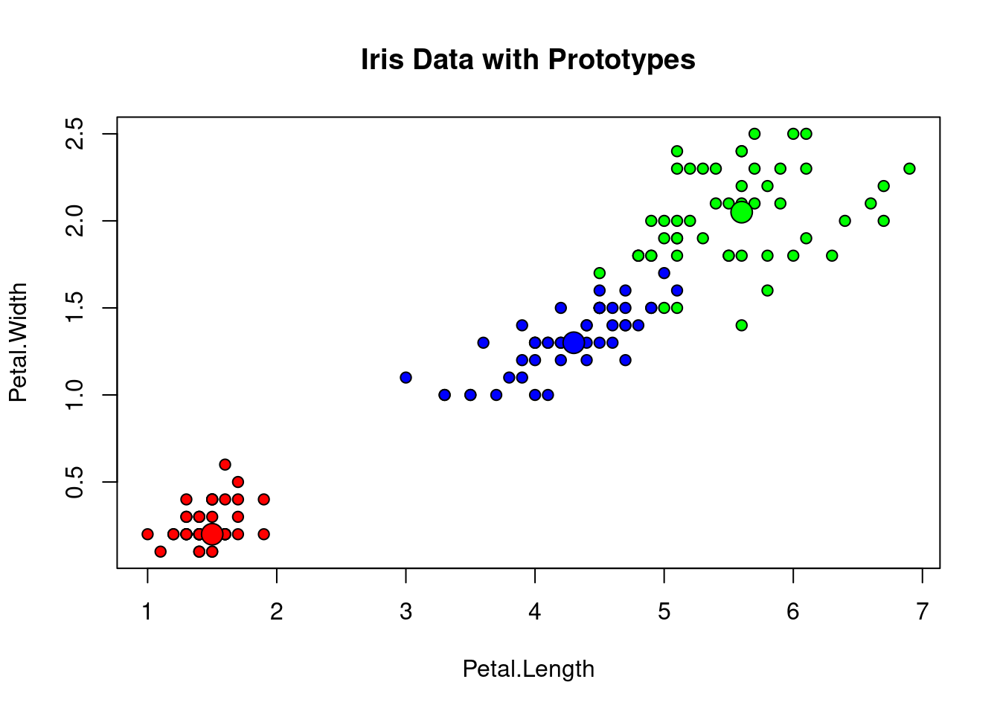
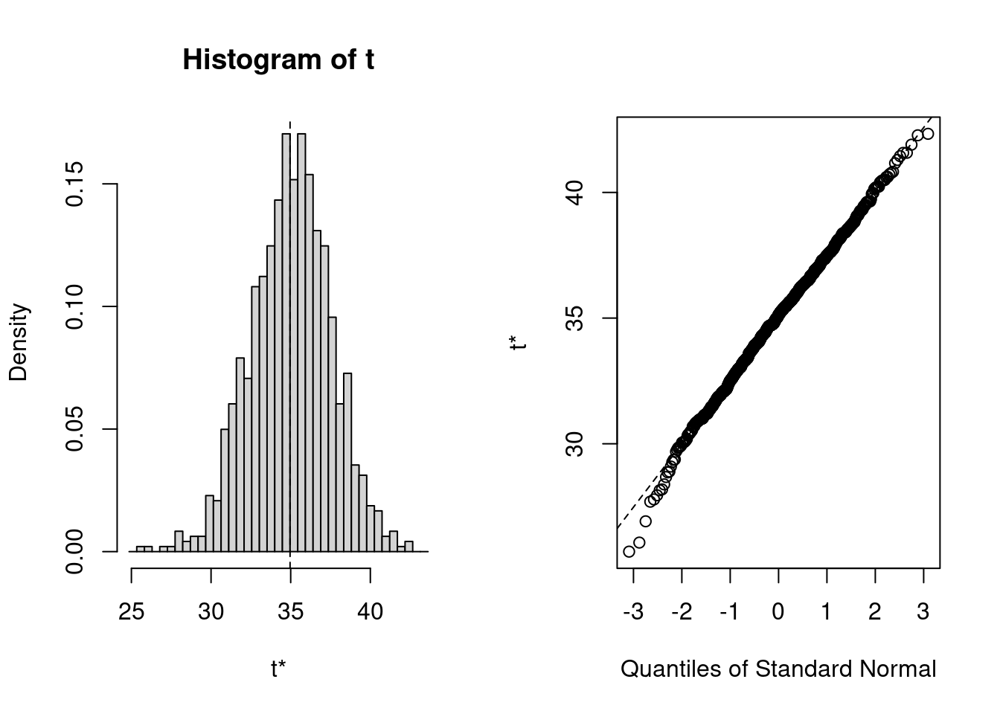
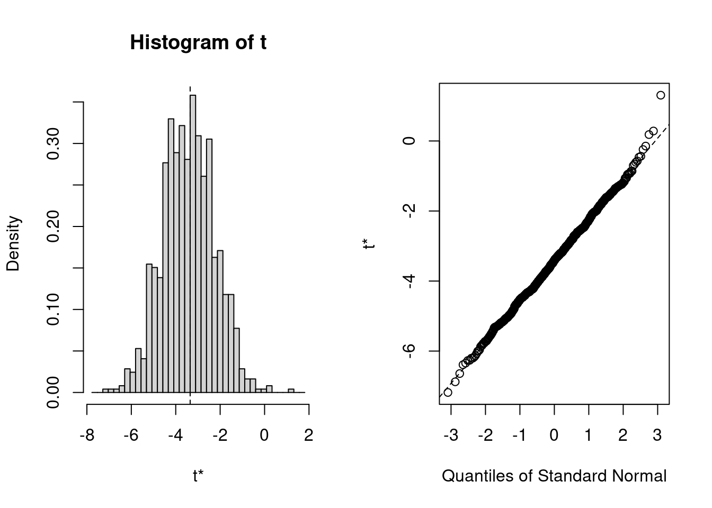

4 bootstrap
library(boot)
#function to obtain R-square from the data
rsq <- function(formula, data, indices ) {
d <- data[indices,] #allows the boot to select sample
fit <- lm(formula, data = d)
return(summary(fit)$r.square)
}
#bootstrapping with 1000 replications
results <- boot(data = mtcars, statistic = rsq,
R = 1000, formula=mpg~wt+disp)
#view results
plot(results)
#get 95%confidence interval
boot.ci(results, type = "bca")## BOOTSTRAP CONFIDENCE INTERVAL CALCULATIONS
## Based on 1000 bootstrap replicates
##
## CALL :
## boot.ci(boot.out = results, type = "bca")
##
## Intervals :
## Level BCa
## 95% ( 0.6315, 0.8558 )
## Calculations and Intervals on Original Scale
## Some BCa intervals may be unstable################################
#bootstrapping with several statistics
#this will get the 95% confidence interval for the three model regression coefficients
#and then add an index parameter to plot() and boot.ci()
library(boot)
#function to obtain regressio nweights
bs <- function(formula, data, indices) {
d <- data[indices,] #allows boot to select sample
fit <- lm(formula, data = d)
return(coef(fit))
}
#bootstrapping with 1000 replications
results <- boot(data = mtcars, statistic = bs,
R = 1000, formula = mpg~wt+disp)
#view results
results##
## ORDINARY NONPARAMETRIC BOOTSTRAP
##
##
## Call:
## boot(data = mtcars, statistic = bs, R = 1000, formula = mpg ~
## wt + disp)
##
##
## Bootstrap Statistics :
## original bias std. error
## t1* 34.96055404 0.0697180657 2.517099149
## t2* -3.35082533 -0.0698794114 1.167096915
## t3* -0.01772474 0.0003354098 0.008902865plot(results, index = 1) #intercept
plot(results, index = 2) #wt